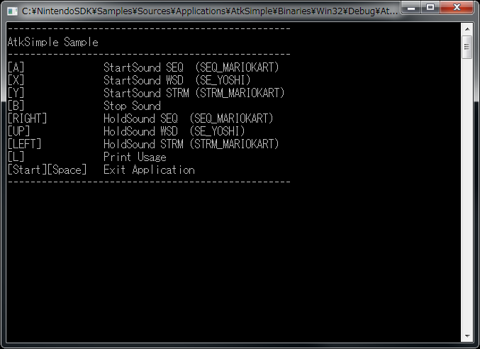

Atk スタートガイド
概要
- NintendoWare オーディオ開発環境では、下記を行うことができます。
- NintendoWare AudioToolKit ライブラリ (以下、Atk ライブラリ) を利用したサウンド再生
- NintendoWare SoundMaker を利用したデータのコンバート
- 本ドキュメントでは、上記の簡単な説明に加えて、 サンプルプログラムのビルド方法などについて説明します。
事前準備
NintendoWare オーディオ開発環境を使用するには、最低限以下のパッケージをインストールする必要があります。
- NintendoSDK
- NintendoSDK NintendoWare
また、本ドキュメントの説明でサンプルデモを使用するため、以下のサンプルパッケージもインストールしてください。
- NintendoSDK Samples
- NintendoSDK NintendoWare Samples
サウンドデータ作成
SoundMaker の起動・コンバート
- NintendoWare オーディオ開発環境では、Atk ライブラリで再生できるデータを作成するために、 SoundMaker というツールを利用します。
- SoundMaker は \Tools\Audio\SoundMaker\SoundMaker.exe にあります。
- サンプルデータは \Samples\Sources\Resources\Atk\Common にあります。
- 同ディレクトリの Common.fspj を SoundMaker のプロジェクトツリーパネルにドラッグ＆ドロップするか、[ファイル] - [プロジェクトを開く] メニューから読み込んでください。
- ツールバーの [コンバート] or [再コンバート] や、[プロジェクト] - [コンバート] or [再コンバート] でデータをコンバートすることができます。
- コンバートされた成果物は、プロジェクトフォルダ内の output フォルダに出力されます。
- NW4F SoundMaker、NW4C SoundMaker および NW4R SoundMaker のデータをインポートすることができます。
- NW4F SoundMaker、NW4C SoundMaker および NW4R SoundMaker は、それぞれ Cafe(Wii U)、CTR(Nintendo 3DS) および Revolution(Wii) 向けの NintendoWare 開発環境に付属するツールです。
- 詳しくは、『SoundMaker マニュアル』をご覧ください。
Atk ライブラリ
概要
- Atk ライブラリ（nn::atk 名前空間の API） を利用する際には、libnn_atk.lib を使用してください。
サンプルプログラムのビルド
- サンプルプログラムをビルド・実行するには、VisualStudio のソリューションファイルを開きます。
NintendoSDK 4.0.0 以降は
\Samples\Sources\Applications\AtkSimple\AtkSimple-spec.Generic.autogen.vs2015.sln
それより以前は
\Samples\Sources\Applications\AtkSimple\AtkSimple-spec.Generic.vs2015.sln
- VisualStudio が起動しますので、[ビルド] メニューなどからソリューションをビルドしてください。
- [デバッグ] メニューから [デバッグ開始] を選ぶことでサンプルプログラムを実行することができます。
- サンプルを実行すると、コマンドプロンプトウィンドウが表示されます。
- オーディオのサンプルプログラムには画面描画がありません。
- PC のキーボード入力によって、再生・停止などの操作が可能になります。
- コマンドプロンプトウィンドウには NN_LOG などのログ出力が表示されます。

- プログラムを停止するには、[デバッグ] メニューから [デバッグの停止] を選択します。
追加情報
全般
- 既知の問題に関しては、 『既知の不具合』 をご覧ください。
- オーディオ開発環境で、複雑と思われるもの、また特殊な概念を含む機能を中心にして、それらに使われる用語定義、動作概念、動作仕様については、『サウンドシステムマニュアル』をご覧ください。
Atk ライブラリ
ツール